What sets the surface temperature of the world's lakes, in summer and through the year
Altitude or Latitude? · In Simple Terms
Going north and going uphill both make a lake colder, but by how much each? This project takes about a million lakes measured from space, works out how much latitude, altitude and the nearby ocean each cool a lake, and turns that into equations that predict any lake's temperature. You can try them on any lake in the calculator below.
There are two ways to walk into the cold: climb a mountain, or travel toward the pole. Both journeys end in winter, yet they are not the same journey. The air keeps a simple rule, losing 6.5 °C for every kilometre of altitude. A lake keeps no such rule. It gathers the sun, holds on to summer, and lives by seasons of its own. To ask which journey a lake feels more is to ask what really makes a place what it is: how far it stands from the equator, or how close it stands to the sky.
LakeTEMP (Korver et al., 2024) averaged nine years of Landsat 8 surface temperatures, 2013–2021, for every lake it could see. After quality checks, 1,067,869 natural lakes between the equator and 70°N are used for July, 30,203 southern lakes for January, and 1.1 million lakes for the whole year. The question: which matters more, latitude or altitude, where does that change, and how well can a few numbers predict a lake's temperature?
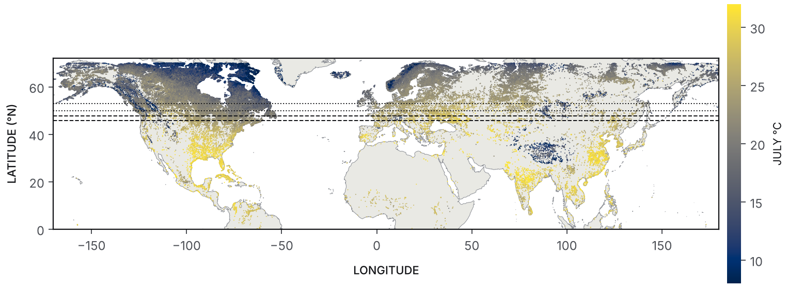
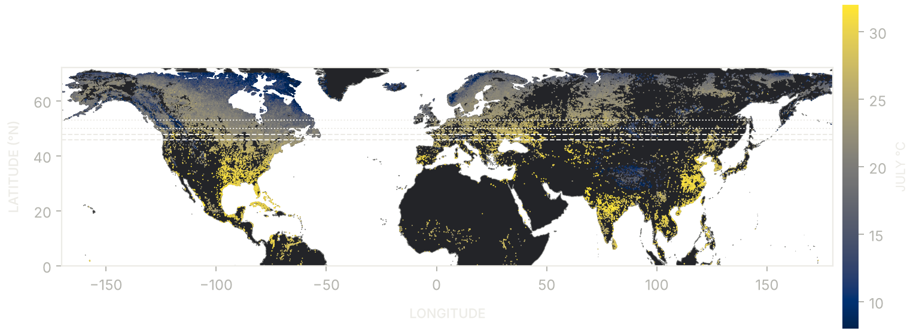
Figure 1Mean July surface temperature of all 1,067,869 Northern Hemisphere lakes, 2013–2021.
How to read it. Each dot is one lake, coloured by its average July surface temperature: yellow is warm, dark blue is cold. The dashed orange and dotted blue lines mark the two latitude bands compared later (the Alps band and southern Canada).
What it shows. Lakes are warmest across the southern United States, India, Southeast Asia and the Middle East, and coldest in the Arctic. The dark patch in Central Asia, at about 35°N, is the Tibetan Plateau: those lakes are as cold as Arctic lakes, even though they are as far south as the Mediterranean. That contrast is the question of this report in one picture. Most of the million lakes are in Canada, Scandinavia and Siberia.
Pick a lake, or enter your own, to see its predicted July temperature, every month of the year, and whether it freezes
Lake calculator · In Simple Terms
Choose a country to see its lakes on the map and in the list, then click one. The calculator runs the four July models from this project, shows each step of the arithmetic, and extends the equations to every month of the year and to ice. Lakes in the list also show what Landsat actually measured, so you can see how close the predictions get.
· every named lake in HydroLAKES with a July measurement, plus the 25 largest unnamed lakes in each country. Click a lake in the list or on the map.
Larger dots are named lakes. Hover for the July temperature.
Latitude and altitude, one lake at a time
Which matters more? · In Simple Terms
Picture every lake as a dot on a chart of how far north it is against how high it is, coloured by its July temperature. If only latitude mattered, colour would change left to right only; if only altitude mattered, bottom to top only. The lines of equal temperature lean, so both matter, and how much they lean tells you how many metres of altitude equal one degree of latitude.
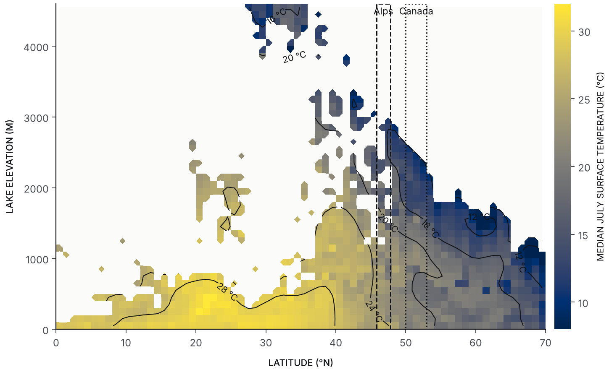
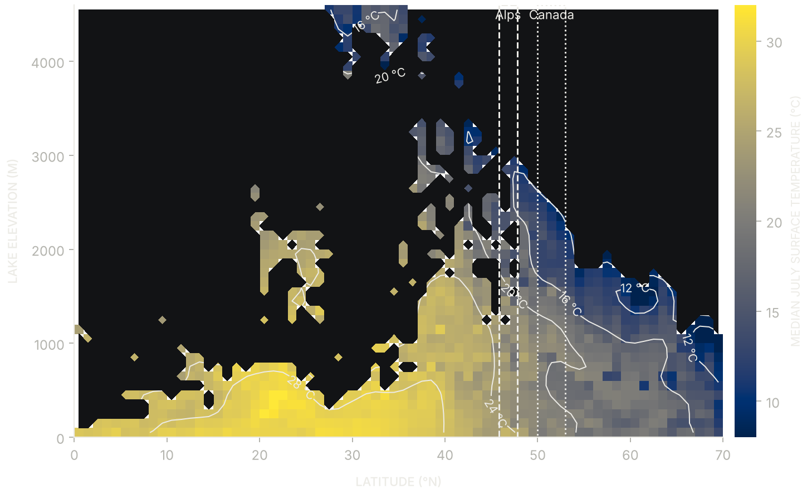
Figure 3Median July temperature by latitude and elevation, with isotherms.
How to read it. The horizontal axis is latitude, the vertical axis is elevation, and each square is the median July temperature of the lakes in that 1° × 100 m box. The black lines are isotherms, lines of equal temperature. A flat isotherm means only altitude changes the temperature; a vertical one means only latitude does; a slanted one means both do.
What it shows. South of about 33°N the isotherms run roughly flat: going north at the same altitude barely changes the temperature, but climbing does. North of 33°N they slope down to the right: to stay at the same temperature while moving north, a lake must be lower. The slope is about 130 m per degree of latitude. The empty space in the upper right exists because there are almost no high lakes in the far north.
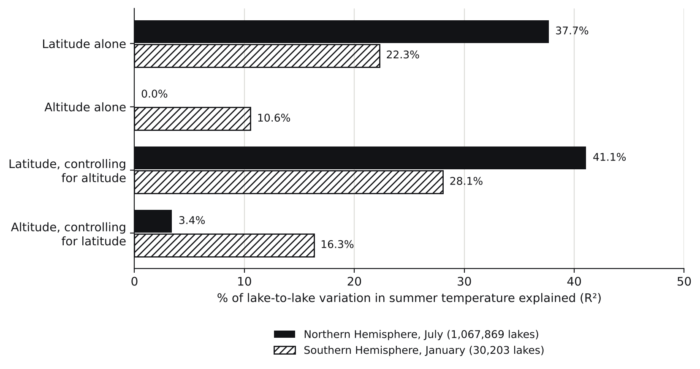
Figure 4Share of lake-to-lake variation explained by latitude and by altitude.
How to read it. Each bar is the share of lake-to-lake differences in July temperature (R²) explained by latitude or altitude, either on its own or after the other has been taken into account.
What it shows. Latitude alone explains 38%; altitude alone explains almost nothing (0%). That is not because altitude doesn't matter: the high lakes are mostly at warm low latitudes (Tibet, Mexico, Ethiopia), so on average they are not colder than the huge number of low, cold lakes in Canada. Once latitude is accounted for, altitude explains a further 3.4%. Latitude dominates simply because lakes are spread across 70° of latitude but mostly sit low.
Latitude wins on reach. On its own, altitude explains almost nothing in the north (0%), because the high lakes (Tibet, the Pamirs, the southern Rockies) sit far south, where lakes are warm anyway. Once latitude is known, altitude adds 3.4% and latitude 41.1%.
Altitude wins per unit. North of 33°N, about 80–130 m of altitude cools a lake as much as one degree of latitude.
The south is different. Altitude explains 16% of southern lake-to-lake variation against 3% in the north. The cooling per km is the same; the south simply has many more high lakes (Andes, East Africa).
A flat tropical band, then a steady fall
Where latitude starts to matter · In Simple Terms
Cut the hemisphere into 5° strips and measure, in each strip, how much a degree north and a kilometre up cool a lake. Near the equator a degree north does nothing; from about 33°N it starts to cost about half a degree. Altitude costs about the same everywhere.
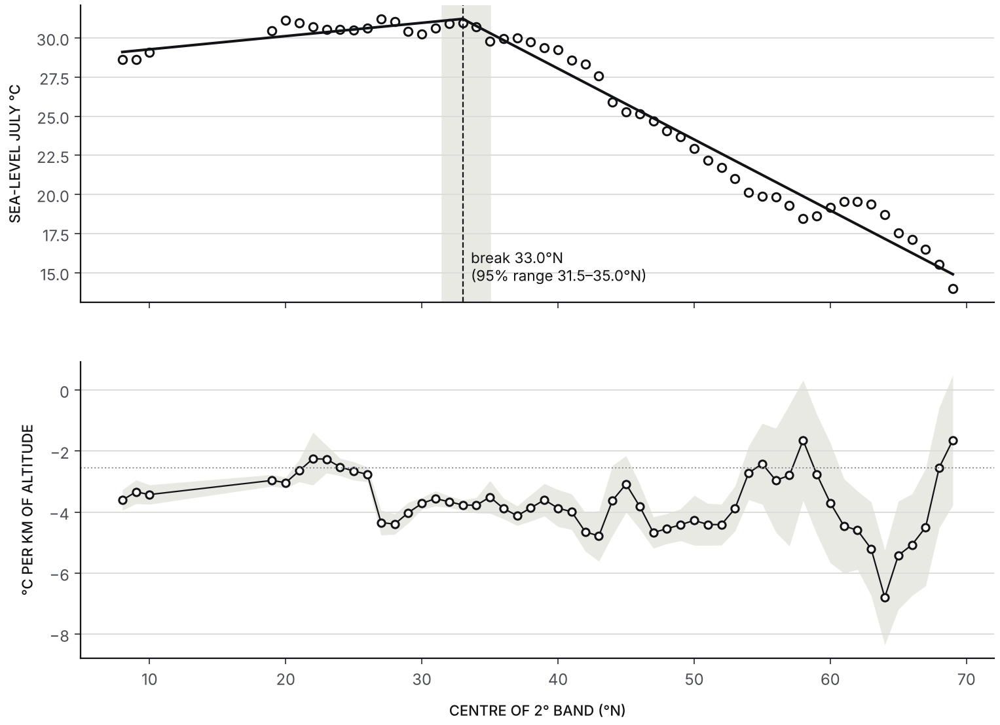
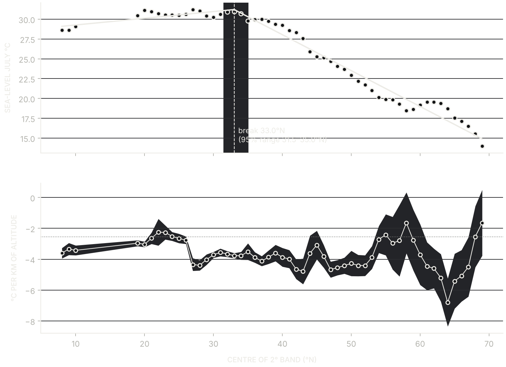
Figure 6Where latitude starts to matter: a 2° band slid north.
How to read it. A 2°-wide band was moved north one degree at a time. In panel a, each circle is the predicted July temperature at sea level in that band, and the two straight lines are the best two-line fit; the dashed line marks where they meet, with its 95% range shaded. Panel b shows the altitude effect in the same bands.
What it shows. Sea-level July temperature is flat, at about 29–31 °C, from the equator to 33.0°N (95% range 31.5–34.5°N), and then falls steadily, about 0.45 °C per degree, to 15 °C at 70°N. The altitude effect (b) has no such break: it stays near −3 to −4.5 °C per km and only becomes noisy north of 55°N, where few lakes are high.
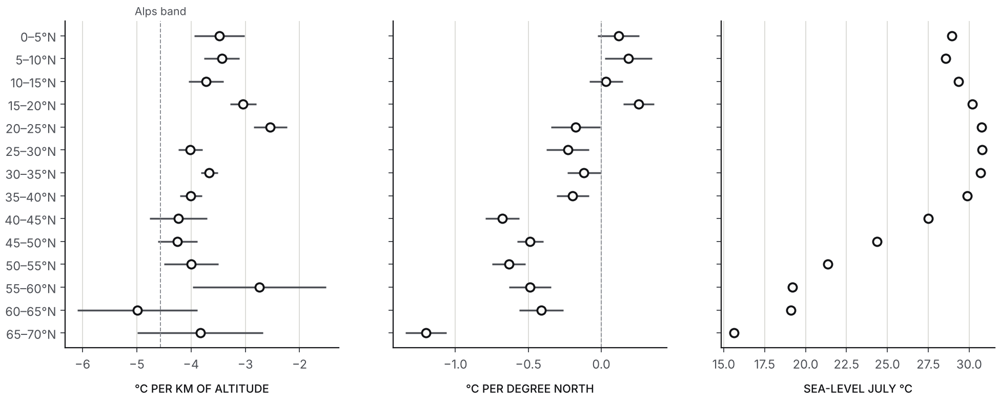
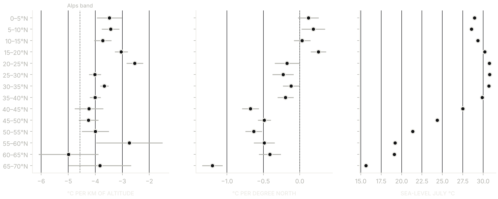
Figure 5Coefficients of the zone equation in each 5° zone.
How to read it. One row per 5° zone. Each circle is the estimate in that zone and the bar its 95% confidence range: if a bar crosses the dashed zero line in panel b, the latitude effect there cannot be told apart from zero. Panel c is the predicted July temperature at sea level, in the middle of the zone, for a typical-depth lake.
What it shows. (a) Altitude cools lakes by about 3–4.5 °C per km in almost every zone; the dashed line is the value for the whole Alps band (−4.6). (b) Latitude has no effect, or even a slightly positive one, up to 35–40°N, then cools lakes by 0.5–0.7 °C per degree, and by more than 1 °C per degree at 65–70°N. (c) Sea-level lakes stay near 29–31 °C up to 40°N and then fall to about 16 °C at 65–70°N.
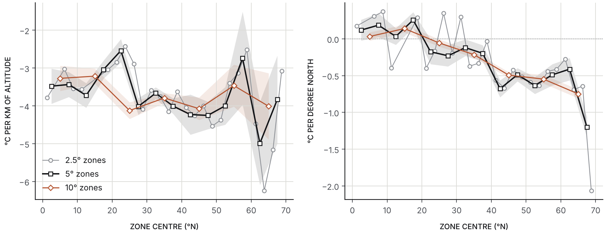
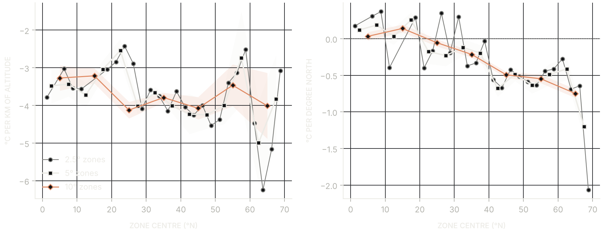
Figure 2The zone equation fitted with 2.5°, 5° and 10° zones.
How to read it. Each point is one zone of latitude. Panel a gives the altitude effect in that zone (°C per km of altitude) and panel b the latitude effect (°C per degree north). The three lines repeat the same calculation with zones 2.5°, 5° and 10° wide; shading is the 95% confidence range for the 5° zones.
What it shows. All three widths tell the same story: altitude cools lakes by about 3–4.5 °C per km at nearly every latitude, while latitude does almost nothing until about 35°N and then cools lakes by about 0.5–0.7 °C per degree. 2.5° zones are noisy and 10° zones hide detail, so 5° zones are used throughout.
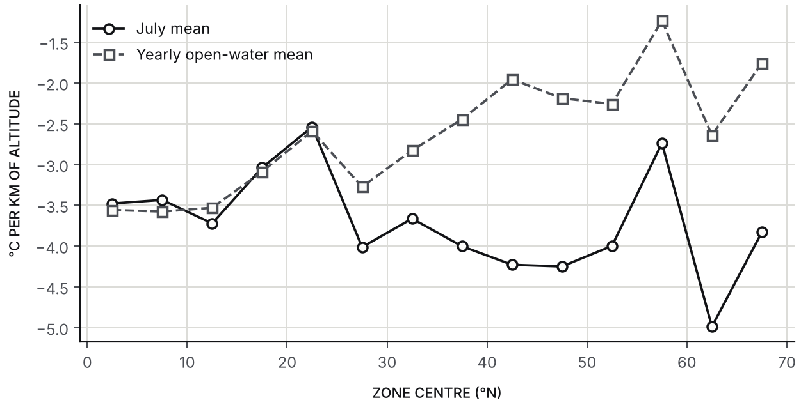
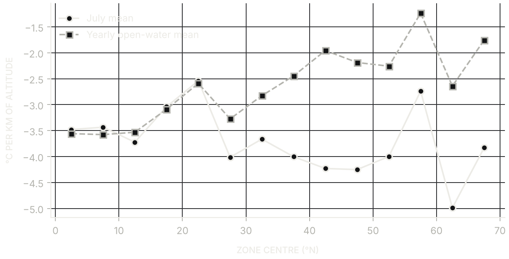
Figure 7Robustness check: July temperature vs yearly ice-free temperature.
How to read it. Two versions of the altitude effect in each 5° zone: one using July temperature, the other using each lake's average over all its ice-free days.
What it shows. The two agree up to about 25°N, where lakes are open all year. Further north they split: high lakes there are only open in summer, so their 'yearly' average is really a summer average and looks too warm, which makes altitude seem to matter less. This is why the report compares lakes in the same month (July) rather than using yearly averages. The agreement in the tropics also shows that the calculation itself is sound: the split further north comes from which months the lakes are open, not from the method.
Why 33°N? In July the sun is still high at mid-latitudes and the days are longer, which makes up for the lower sun. July sunlight therefore stays almost tropical up to about 35°, and lake temperature does too.
Why July? Comparing lakes in the same month keeps the comparison fair: further north, high lakes are only open in summer, so a yearly average is really a summer average.
The Alps latitude band around the world, and the Alps against southern Canada
Same latitude, different mountains · In Simple Terms
Take one narrow strip of latitude, the one the Alps sit in, and look at it all the way round the world. Lakes at the same latitude cool with altitude at very different rates in different regions, and the leftover pattern (red warmer, blue colder than predicted) points to the ocean.
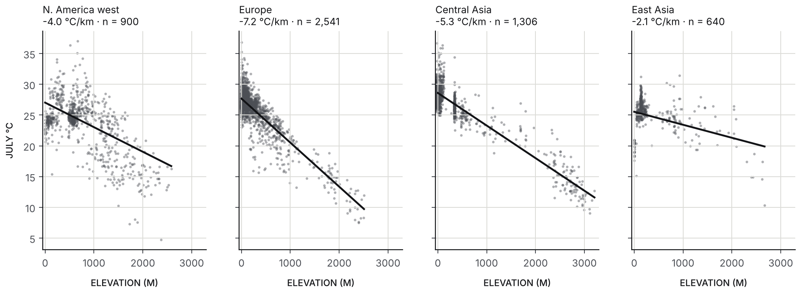
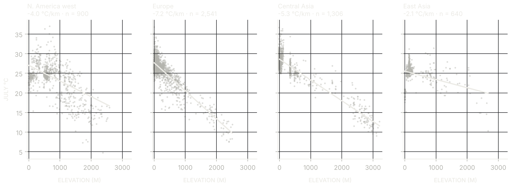
Figure 8The Alps latitude band (45.8–47.8°N) in four regions.
How to read it. Four regions at the same latitude as the Alps (45.8–47.8°N). Each grey dot is one lake, plotted by altitude against July temperature; the orange line is the fitted cooling with altitude for a typical-depth lake.
What it shows. At the same latitude, lakes cool with altitude at very different rates: 7.2 °C per km in Europe, 5.3 in Central Asia, 4.0 in western North America and only 2.1 in East Asia. Latitude alone therefore cannot explain everything: the regional setting matters too. Europe has the tightest cloud of dots, because its lakes climb steadily from the lowlands to over 2,500 m in the Alps. East Asia has few high lakes and most of its lakes sit near sea level, so its line is the least certain (see the wide range in Figure 9).
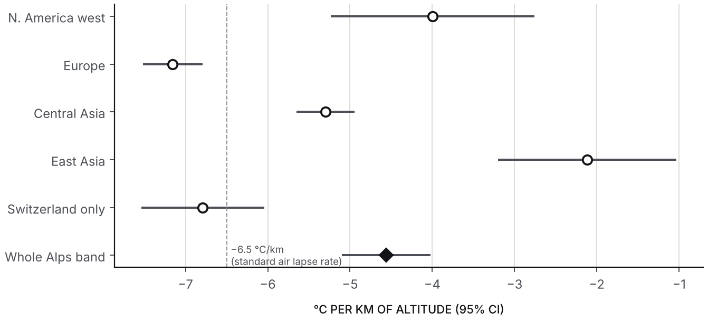
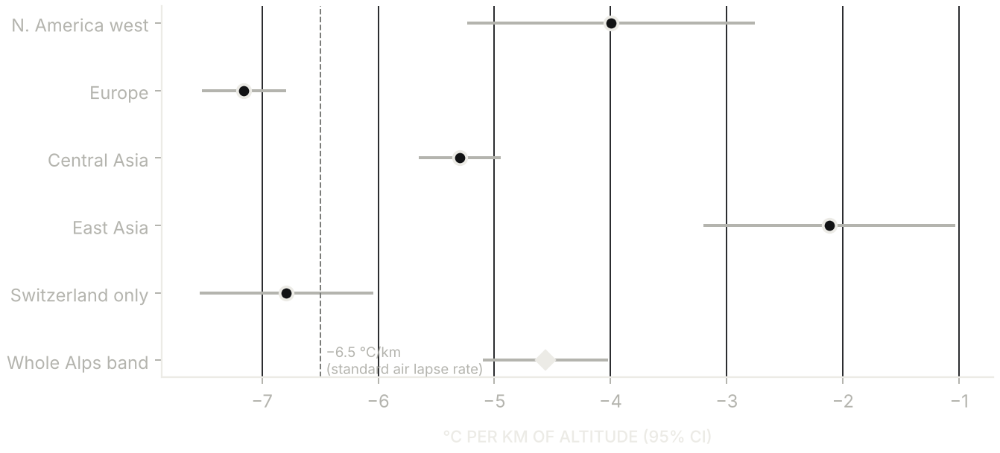
Figure 9Cooling rate with altitude by region at the Alps latitude.
How to read it. Each circle is one region's cooling rate with altitude at the Alps latitude, with its 95% confidence range. The dashed line is the standard rate for air (−6.5 °C per km).
What it shows. Europe (−7.2) and Switzerland on its own (−6.8) cool at about the air's rate. Central Asia cools somewhat less, and western North America and East Asia much less, though their ranges are wide because they have fewer high lakes. The whole band together gives −4.6 °C per km. The regions differ more than chance would allow.
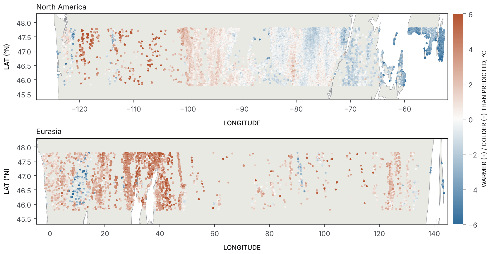
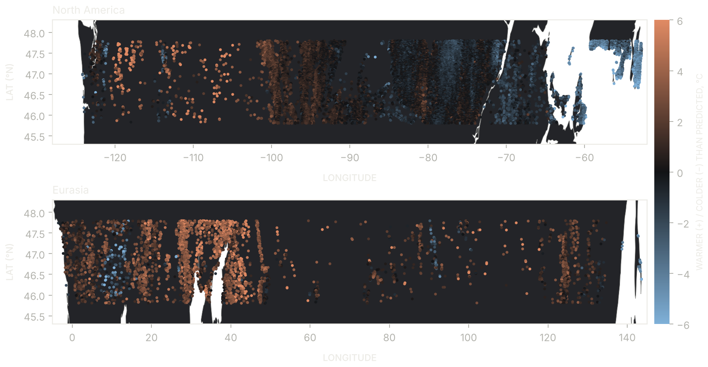
Figure 10Lakes in the Alps band warmer or colder than predicted.
How to read it. Every lake in the Alps band, coloured by how far its real July temperature is from what the zone equation predicts: red lakes are warmer than predicted, blue lakes colder. Grey lines are country borders.
What it shows. The pattern is not random. Lakes near cold ocean (Newfoundland and the Gulf of St Lawrence, top right) and the glacier-fed lakes of the Alps are colder than predicted. Lakes deep inland, on the Ukrainian and Russian steppe and in the US interior west, are warmer. This is what led to distance from the ocean being added as a variable.
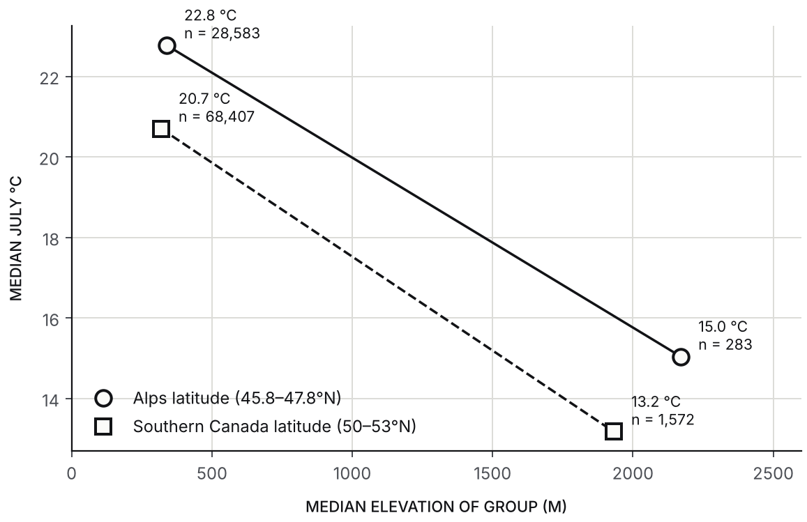
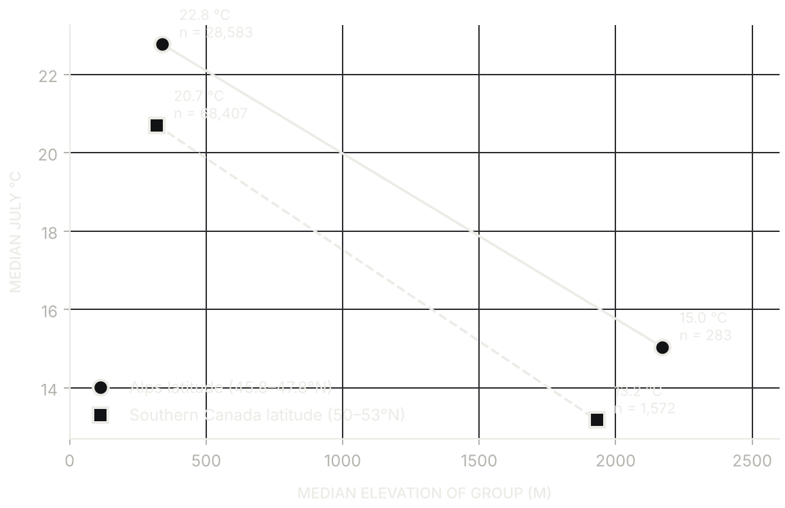
Figure 11Low and high lakes at two latitudes.
How to read it. Each point is the median July temperature of a group of lakes: low lakes (below 500 m) and high lakes (above 1,500 m) in the Alps band and in southern Canada. The number of lakes in each group is printed next to it.
What it shows. Moving 4.7° north, from the Alps band to southern Canada, costs about 2 °C at both altitudes. Climbing about 1.8 km costs about 7.7 °C in both bands. The two lines are nearly parallel, so the cost of altitude is the same at both latitudes. So one kilometre of altitude (about 4.3 °C) costs about twice as much as the whole move from the Alps to southern Canada.
The trade-off. Moving 4.7° north, from the Alps band to southern Canada, costs about 2 °C. Climbing about 1.8 km costs about 7.7 °C, at both latitudes.
The third control: distance to the sea
The ocean · In Simple Terms
Seawater changes temperature slowly, so in summer it is colder than the land and cools everything near it. North of 33°N a lake on the coast is several degrees colder than one far inland at the same latitude and altitude.
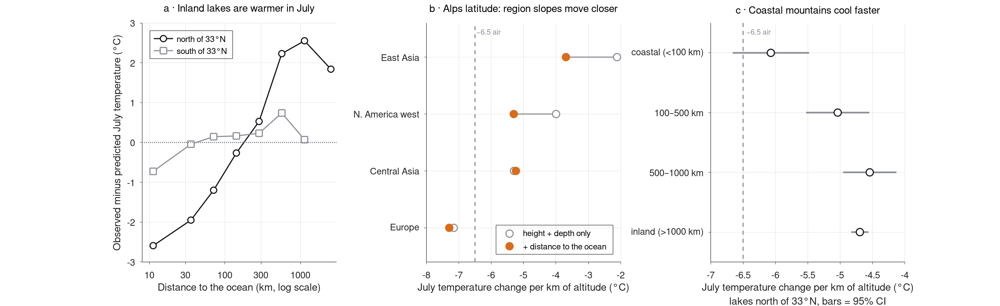
Figure 12Distance to the ocean.
How to read it. (a) How far lakes are from the predicted temperature (observed minus predicted) for lakes at different distances from the ocean, north and south of 33°N. (b) The Alps-band cooling rates from Figure 9 before (open circles) and after (filled) distance to the ocean is added to the equation. (c) Cooling rate with altitude for mountain lakes at different distances from the ocean.
What it shows. (a) North of 33°N, lakes within 10 km of the ocean are about 2.6 °C colder than predicted, and lakes 1,000 km inland about 2.5 °C warmer, a 5 °C swing from distance to the sea alone. South of 33°N the effect is small. (b) Once distance to the ocean is included, the two odd regions (East Asia and western North America) move toward the others. (c) Mountain lakes near the coast cool faster with altitude (about 6 °C per km) than inland mountain lakes (about 4.5–5 °C per km).
From three variables to the full model, tested on lakes they never saw
Four prediction models · In Simple Terms
Each model is an equation: start from a number, add something for latitude, altitude, distance to the sea and so on. To test them fairly, the lakes were split into five groups by location and each group was predicted by an equation built only from the other four. The nearby-lakes correction adds the average miss of known lakes around the one you want.
| Model | Variation explained | Typical error (°C) | Within ±1 °C | Within ±2 °C |
|---|---|---|---|---|
| Model 1 · 3 variables + continent | 78.7% | 1.33 | 39% | 68% |
| Model 2 · Model 1 + nearby lakes | 87.6% | 0.88 | 55% | 82% |
| Model 3 · 7 variables | 82.3% | 1.25 | 41% | 71% |
| Model 4 · all variables + nearby lakes | 90.8% | 0.80 | 60% | 87% |
Accuracy on 1,067,869 lakes, each predicted by a model that was not fitted to it.
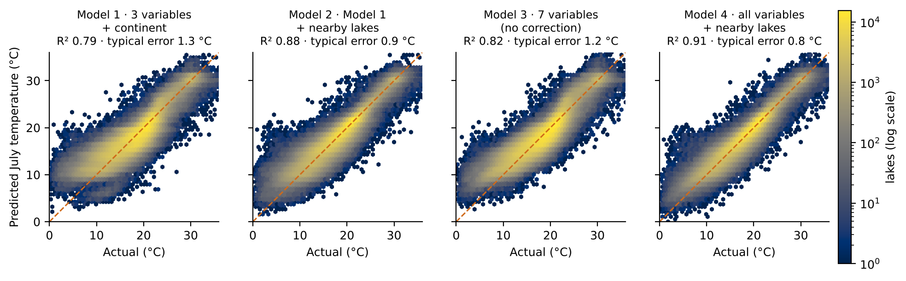
Figure 13Predicted vs actual July temperature for every lake, using lakes not seen by each model.
How to read it. One panel per model. The horizontal axis is the real July temperature, the vertical axis the prediction for a lake the model had not seen. Colour shows how many lakes fall in each small square (log scale). A perfect model would put every lake on the dashed diagonal.
What it shows. Model 1 already follows the diagonal but with a wide cloud. Each step tightens it, and Model 4's cloud is narrow along almost the whole range. The remaining spread is largest for cold lakes (below about 10 °C), which are mostly Arctic and high-mountain lakes.
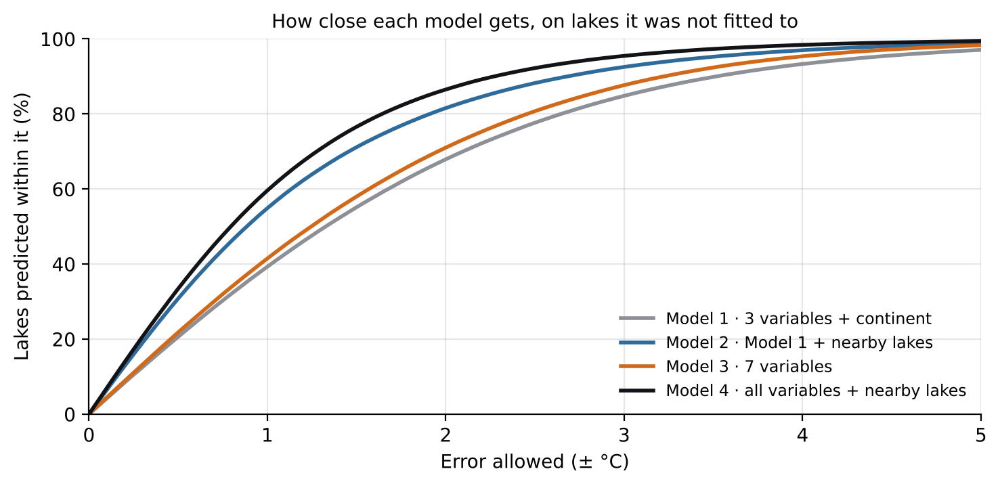
Figure 14Share of lakes predicted within a given error.
How to read it. For each model, the curve shows what share of lakes (vertical axis) is predicted within a given error (horizontal axis). A curve that rises faster and further to the left is a better model.
What it shows. Model 4 predicts 60% of lakes within ±1 °C and 87% within ±2 °C. The two models with the nearby-lakes correction (2 and 4) are clearly above the two without it, so the correction matters more than the extra variables in Model 3.
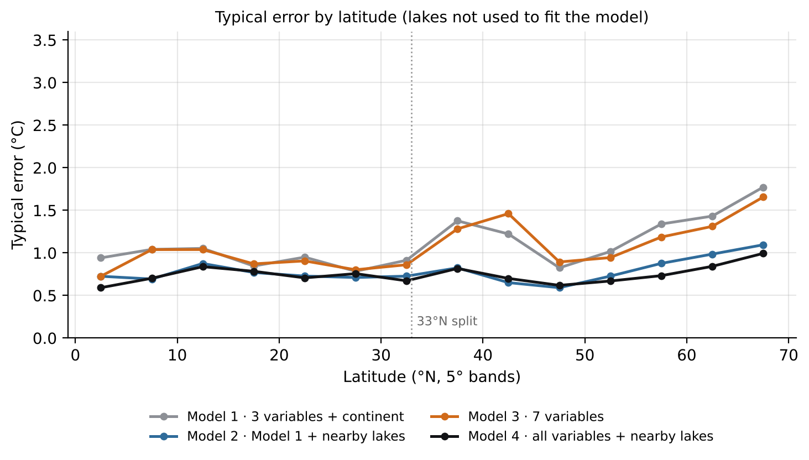
Figure 15Typical error by latitude.
How to read it. Typical error (the median size of the miss) in each 5° band of latitude, for each model, on lakes not used to fit it.
What it shows. Errors grow toward the Arctic and jump just north of the 33°N split. The nearby-lakes correction (Models 2 and 4) removes most of this, flattening the curve to below 1 °C at almost every latitude.
| Continent (by longitude) | KS (south) | KN (north) |
|---|---|---|
| Western N. America | 0 | 0 |
| Eastern N. America | −1.74 | −3.50 |
| N. Atlantic | −3.49 | −3.78 |
| Europe | −2.43 | 1.48 |
| Central Asia | −1.12 | 0.22 |
| East Asia | −1.50 | 0.05 |
Big-lake adjustment (lakes of 500 km² or more only), added to Model 1:
c is the average error of the Model 1 equation for all known lakes in the 3 × 3 block of one-degree squares around the lake (≈300 × 300 km), multiplied by n / (n + 20), where n is the number of those lakes, so that sparse areas receive a small correction. Values for all 12,749 squares are in the CSV table correction_map.csv.
| Continent (by longitude) | KS (south) | KN (north) |
|---|---|---|
| Western N. America | 0 | 0 |
| Eastern N. America | −0.89 | −3.49 |
| N. Atlantic | −2.57 | −3.60 |
| Europe | −1.87 | 1.91 |
| Central Asia | −0.26 | 0.14 |
| East Asia | −0.61 | 0.36 |
Western N. America: west of 100°W · Eastern N. America: 100–60°W · N. Atlantic: 60–15°W · Europe: 15°W–40°E · Central Asia: 40–100°E · East Asia: east of 100°E.
A separate equation for each 5° zone × continent (84 groups). The 33 groups with at least 300 lakes and 20 above 1,000 m have their own coefficients (Appendix; groups with fewer than 20 lakes above 1,500 m leave out the h+ term); the rest use Model 3. φmid is the middle of the zone. The correction c is computed as in Model 2, from Model 4's own errors.
Lakes of 500 km² or more stay colder than their place suggests
Big lakes · In Simple Terms
A huge, deep lake is like a giant bathtub that takes all summer to warm up. The simple model expects it to be as warm as the small lakes around it, so it guesses about 5 °C too warm; a correction for size and depth halves that.
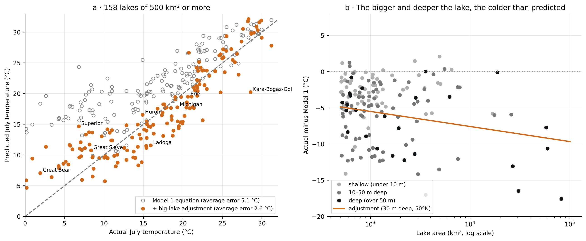
Figure 16The 158 lakes of 500 km² or more.
How to read it. (a) Each circle is one of the 158 lakes of 500 km² or more: real July temperature against the Model 1 prediction (open grey) and the prediction after the big-lake adjustment (filled orange). (b) Model 1's miss for each lake against its area, shaded by depth; the orange line is the adjustment.
What it shows. Without the adjustment almost every big lake sits above the diagonal: Model 1 makes them too warm, by 5.1 °C on average. The adjustment brings most of them onto the diagonal (2.6 °C). Panel b shows why: the miss grows with area, and deep lakes (black) miss the most, because a large volume of water warms slowly through the summer.
January, the southern summer, for 30,203 lakes
The Southern Hemisphere · In Simple Terms
Does the same story hold south of the equator? Mostly: altitude costs the same, and the tropics are flat again. But the break comes earlier and the coast matters less, because there is little land at those latitudes and all of it is near cold ocean.
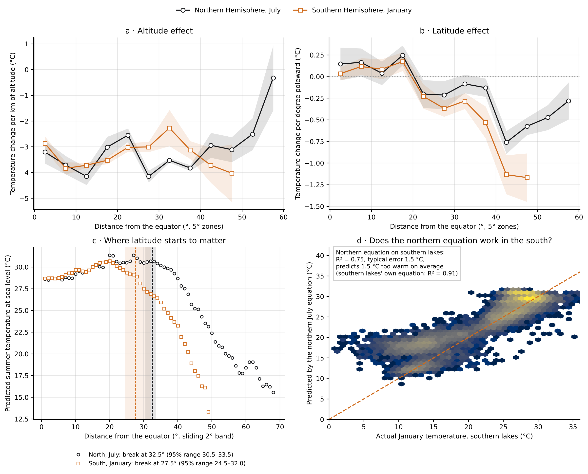
Figure 17Northern Hemisphere in July vs Southern Hemisphere in January.
How to read it. Black lines and circles are northern lakes in July; orange lines and squares are southern lakes in January (their summer). Panels a and b repeat Figure 5 for both hemispheres, panel c repeats Figure 6a, and panel d compares real southern temperatures (horizontal) with what the northern equation predicts (vertical).
What it shows. (a) The cooling with altitude is about the same in both hemispheres. (b) Near the equator, latitude does nothing in either hemisphere. (c) The south's break comes earlier, at 27.5° rather than 32.5° in this simple model, and the fall after it is steeper. (d) The northern equation, applied unchanged, still lands most southern lakes near the diagonal (R² 0.76) but runs about 1.5 °C too warm.
| North (July) | South (January) | |
|---|---|---|
| Break latitude | 32.5° | 27.5° |
| Cooling per degree beyond the break | -0.47 °C | -0.68 °C |
| Altitude explains (once latitude is known) | 3% | 16% |
| Northern equation used on southern lakes | — | R² 0.75, 1.5 °C too warm |
One wave per lake, and when lakes freeze
Through the whole year · In Simple Terms
A lake that never freezes warms and cools along one smooth wave each year. Three numbers describe it: the yearly average, how far the summer peak sits above it, and when the peak comes. Each of those has its own equation, so the whole year can be predicted from where the lake is.
Any month m (January = 1; southern lakes shift by six months)
Yearly average T̄ = 29.22 − 0.037 φ − 0.475 (φ − 17.5)+ − 3.303 h + 0.299 C − 0.681 D − 0.436 A − 1.431 S
Half-swing a = -3.52 + 0.324 φ − 0.442 (φ − 39)+ − 0.132 h + 1.281 C − 0.307 D − 0.222 A − 1.811 S
Warmest month p = 6.76 + 0.01 φ − 0.15 h − 0.03 C + 0.135 D + 0.103 A − 0.094 S
Ice-free days N = 645.6 − 9.069 φ + 4.559 (φ − 49.5)+ − 32.99 h + 7.924 C + 17.023 D − 1.225 A + 58.178 S
φ = distance from the equator (°), h = altitude (km), C = log₁₀(km to sea + 10), D = log₁₀(depth m) − log₁₀(3.3), A = log₁₀(area km²) − log₁₀(0.23), S = 1 for southern lakes, (x)+ = x if positive, else 0. On unseen lakes the wave predicts every month with R² 0.93 (typical error 1.7 °C); the ice-free-days equation has R² 0.62.
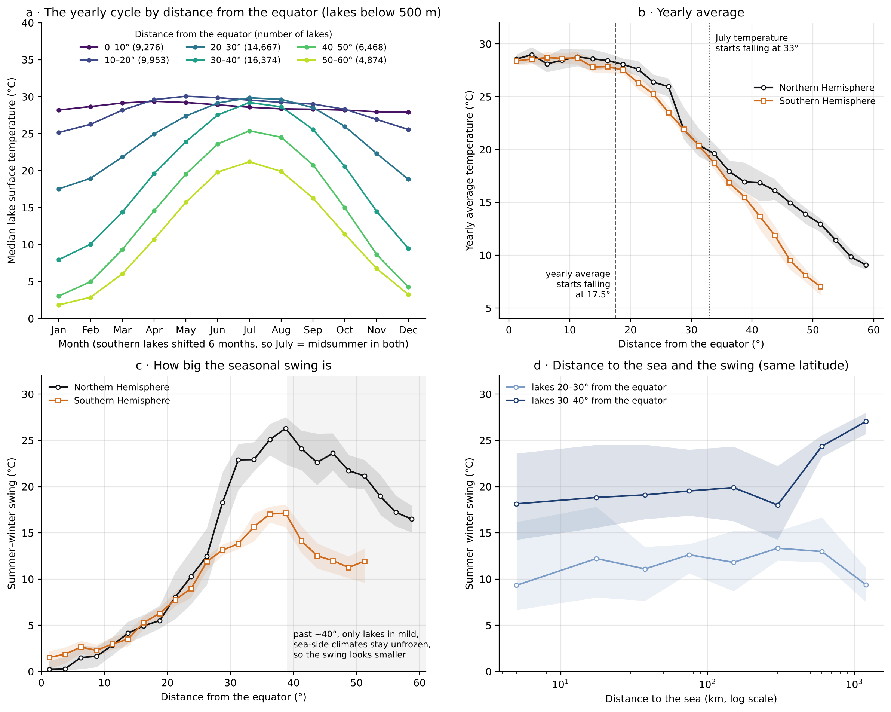
Figure 18The yearly cycle of lakes that never freeze.
How to read it. (a) The median temperature of low lakes in each month, one line per 10° band of distance from the equator (southern lakes shifted by six months). (b) Yearly average and (c) summer–winter swing against distance from the equator; shading covers the middle half of lakes. (d) Swing against distance to the sea, for lakes 20–30° and 30–40° from the equator.
What it shows. Near the equator the line in (a) is almost flat: lakes stay near 28 °C all year. Further from the equator the curve becomes a tall hump. The yearly average (b) starts falling at 17.5°, well before July does (33°), and the swing (c) rises from almost nothing to about 25 °C at 35–40°N. At the same latitude, lakes far inland usually swing more (d), especially at 30–40°.
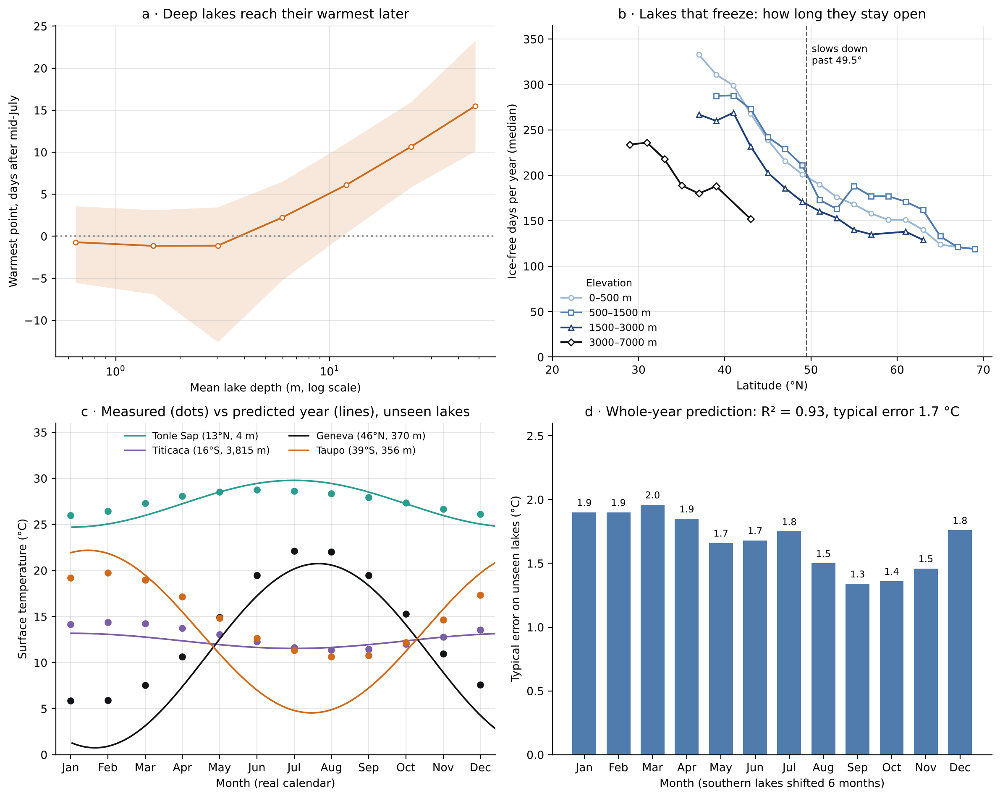
Figure 19The warmest point, the ice-free season, and predicting the whole year.
How to read it. (a) Days between mid-July and each lake's warmest point, by depth (line: median; shading: middle half of lakes). (b) Ice-free days per year for northern lakes that freeze, one line per altitude band. (c) Four lakes not used in fitting: dots are measured monthly temperatures, lines the year predicted from geography alone. (d) The average miss of the whole-year prediction in each month.
What it shows. (a) Lakes up to about 4 m deep peak in mid-July; a 50 m lake peaks about two weeks later. (b) The ice-free season shortens by about 9 days per degree north until 49.5°N, then more slowly, and every kilometre of altitude costs about a month. (c) Tonle Sap and Titicaca are well predicted, Geneva and Taupo less so: the model makes their winters too cold. (d) Errors are slightly larger in winter and spring (about 1.9 °C) than in late summer and autumn (about 1.4 °C).
Every result, each with its equation
Everything found · In Simple Terms
This is the whole project in one list. Each item is one finding, with the numbers and, where there is one, the equation behind it.
A complete list of the results in this report. Symbols: φ = latitude, or distance from the equator in the Southern Hemisphere and yearly sections; h = elevation (km); h+ = max(h − 1.5, 0); C = log10(km to ocean + 10); D = log10(depth m) − log10(3.3); A = log10(area km²) − log10(0.23); S = 1 for a Southern Hemisphere lake; (x)+ = x if positive, otherwise 0. Accuracy figures are for lakes not used in fitting.
Everything needed to check or rebuild the results
Report, data and code · In Simple Terms
The full report explains every figure and equation. The MATLAB and Python code rebuild every number and figure from the LakeTEMP data.
matlab/README.txt)Limits. Landsat measures the top fraction of a millimetre of water in the late morning on clear days. 2013–2021 is a snapshot, not a trend. Most lakes are in Canada and Scandinavia, so hemisphere-wide numbers lean toward them. The models predict typical lakes well but the largest and deepest lakes worst. The yearly and ice predictions in the calculator extend equations fitted on never-frozen lakes and are approximate.